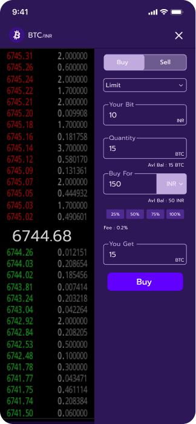
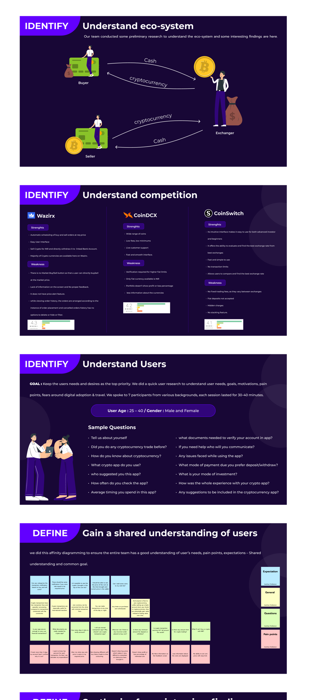
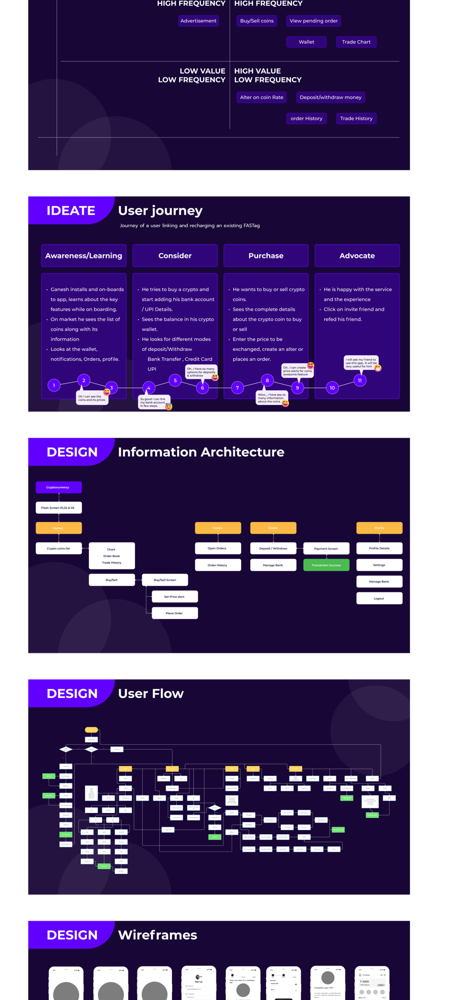
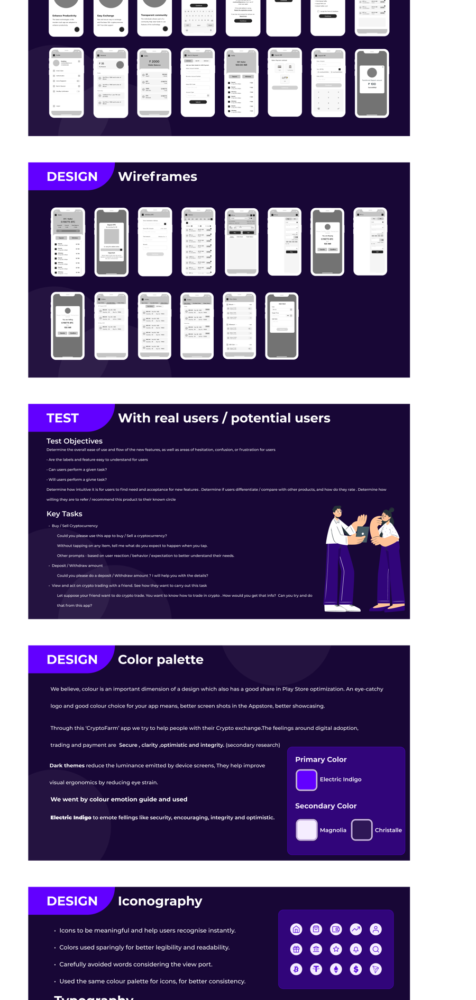
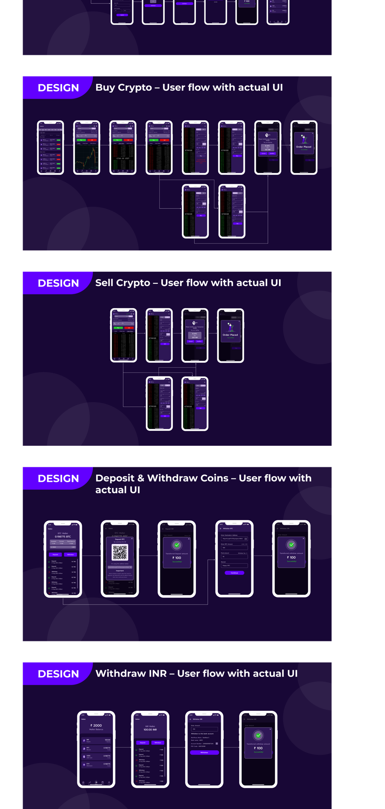
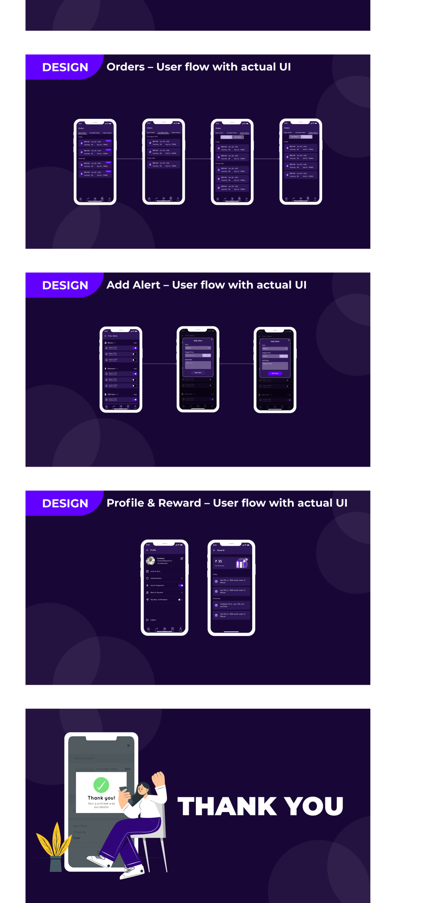
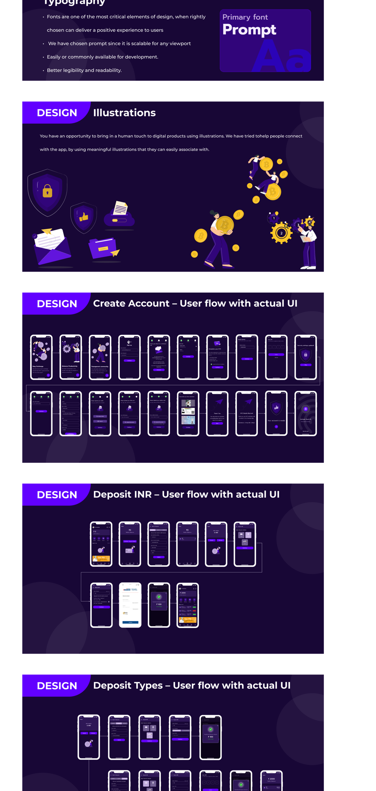

A self-directed cryptocurrency exchange project, traced fully — including the trust-testing protocol that was run, and the quantitative results that weren't measured.

This was a self-directed brief, not a client engagement: design a mobile app that lets people buy and sell cryptocurrency. I chose it because it sits at an uncomfortable intersection — real money, a market most people don't understand, and an industry with a well-earned trust deficit — which makes it a genuinely hard interface to get right.
The starting assumption was that a good crypto exchange app is mainly a charting and execution problem. I treated that as unproven. Research objective: find out whether existing apps were actually failing at the transaction, or failing at something upstream of it — trust.
Seven participants, ages 25–40, 30–40 minute sessions each — a mix of active traders and people who'd never bought crypto. Behavioural pattern (more telling than what people said directly): five of seven used WazirX day-to-day, six of seven treated crypto as a long-term hold rather than active trading, and six of seven funded their accounts through a bank transfer rather than UPI or card — the opposite of what I'd assumed going in.

Pain points: no visibility into the buy rate before selling, no price alerts, vague feedback after every action. Needs: clarity on rate and status without hunting for it. Frictions: uneven basic trading literacy across participants.
Observation → Pattern → Insight → Implication: participants checked rates constantly → the pattern was compulsive re-checking, not casual monitoring → the insight was an absence of trust between actions → the implication was to surface state and confirmation immediately, not just correctly.
The critical moments for design intervention weren't at sign-up — they were in the seconds right after every buy, sell, and deposit, exactly where the emotional progression shifts from anxious to (hopefully) reassured.
"A first-time trader needs to feel informed after every action, because the crypto industry's reputation means silence reads as something going wrong, not as nothing happening."
HOW MIGHT WE
How do we help users trade securely and efficiently, while keeping them informed of every action related to their trade?
Every candidate feature — from price alerts to a portfolio dashboard to social trading — was run through a value-versus-frequency matrix rather than built on instinct.

Trade chart and the buy/sell flow scored both high-value and high-frequency, so they earned the most design attention. Manually altering an on-chain rate scored low on both axes and was deliberately kept out of the primary flow.
Alternative considered and rejected: a heavier onboarding tutorial walking through every feature. Rejected because the research showed the anxiety was situational (after specific actions), not general unfamiliarity — a tutorial would have front-loaded friction without addressing the actual moment of doubt.
Navigation put the trade chart and buy/sell flow one tap from home, matching their prioritization score. Lower-frequency actions (settings, manual rate adjustment) were pushed deeper rather than competing for primary navigation space.

Electric Indigo was chosen deliberately, not decoratively — colour-emotion association research points to indigo carrying security, clarity, and optimism, exactly the register a first-time trader needs. Type was chosen for legibility at small sizes, and a dark theme reduces eye strain for a screen people said they checked more often than they wanted to.

The buy/sell flow is where it all had to come together: live rate, order type, confirmation, and result, without making a mistake feel costly. Every extra tap was a tap where trust could break, so it got the most iteration of anything in the app.

Objective: whether labels and flow were easy to understand, where users hesitated or got confused, and how the experience compared to apps they already used. Hypothesis: explicit confirmation states would reduce compulsive re-checking behaviour observed in research.

The strongest signal from the test protocol was qualitative, not scored: explaining the app to a friend forced participants to notice exactly where their own confidence ran out — a better trust test than task completion alone. Without scored data, the honest next step is to run this protocol with a larger sample and capture completion and confidence ratings, not to claim an iteration that didn't happen.
| Metric | Before | After | Change |
|---|---|---|---|
| Task completion rate | Not measured | Not measured | Protocol run, not scored |
| Confidence rating | Not measured | Not measured | Qualitative only |
| Hesitation points observed | — | Buy/sell confirmation moment | Identified qualitatively |
What improved: a clear, testable protocol for evaluating trust, not just usability. What remains unresolved: no quantitative baseline exists to prove the redesign reduced hesitation. What surprised me: the "explain it to a friend" task surfaced more honest friction than the direct task did. What's next: run the same protocol with scored completion and confidence metrics across a larger sample.
A trust problem, traced from a competitor teardown through to a real (if unscored) validation protocol. The chain holds up to the point of scored results — which didn't happen here, and isn't presented as if it did.
The buy/sell screen, at source resolution — live order book, a limit order form, quick-percentage balance buttons, and the fee disclosed before confirming.
Every competitor already handled transactions correctly. None of them made a first-time trader feel safe. That gap was the entire opportunity.
Payment method and investment horizon both came out differently in practice than participants described themselves in conversation.
The highest-value, highest-frequency features were also the ones causing the most hesitation — that's not a coincidence worth ignoring.
The test design was real and defensible. Saying the results weren't captured is more useful to a reviewer than a fabricated number.
The through-line: you can't design your way out of a trust problem with better charts. You design your way out of it by removing every moment where the user has to just hope it worked.